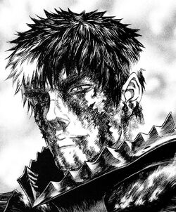
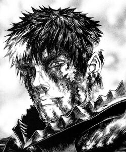
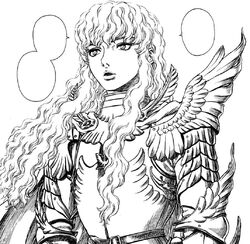

Guts
Descripcion del personaje
es el protagonista del manga y anime Berserk. Es un antiguo mercenario marcado que viaja por el mundo en una lucha interna constante entre perseguir su venganza y proteger a sus seres queridos.
 Mas informaciones el protagonista del manga y anime Berserk. Es un antiguo mercenario marcado que viaja por el mundo en una lucha interna constante entre perseguir su venganza y proteger a sus seres queridos.
 Mas informaciones uno de los personajes principales y el principal antagonista del manga Berserk. Es un personaje de apariencia pulcra y andrógina que antiguamente era el líder de la Banda del Halcón, la banda de mercenarios a la que pertenecía Guts.
 Mas informacion